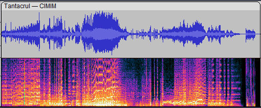
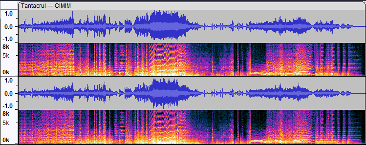

Multi-view
Spectrograms and Waveforms have different strengths and weaknesses:
- Waveforms show you overall loudness best. You might see the danger of imminent clipping. Precision in cutting and splicing is also best performed in Waveform view.
- Spectrograms show you frequencies. In vocals, for example, you can see how vowel sounds change over time. The onset of new sounds, when another sound is playing, often shows up more clearly in Spectrograms.
Contents
- Multi-view Waveform and Spectrogram view
- Accessing a Multi-view for a track
- The topmost view
- Changing the split proportions
- Making selections in Multi-view
- Managing Envelopes in Multi-view
Multi-view Waveform and Spectrogram view
- 
- Example of a mono audio track with a Multi-view split 50:50 Waveform/Spectrogram
Accessing a Multi-view for a track
To get a split Multi-view for a track select Multi-view from the track's Track Control Panel dropdown menu.

This will display a 50:50 Waveform/Spectrogram split.
- 
Either Waveform or Spectrogram view can be on top, depending on which view was present before turning on Multi-view.
Note that the Vertical Scale also divides in two portions and that actions there remain appropriate to the part of the split view they are associated with.
The dropdown menu of the Track Control Panel will now have two additional checkmarks, for Waveform and Spectrogram. Unchecking either of those items causes the other view type to become the sole view, but you will remain in Multi-view mode.

If you have a stereo track the Waveform and Spectrogram views keep the same height proportions in the two channels.
Turning off Multi-view
When you uncheck Multi-view Audacity will return you to a simple audio track. What Audacity will show will be the one that was the upper one in the Multi-view.
The topmost view
When you create a Multi-view from a singular view, whichever was the original view becames the upper, topmost view.
There are are couple of ways you can change this.
Using the Track Control Panel Menu
If you visit the Track Control Panel's dropdown menu you can turn off the topmost view (this sill leave you with a pseudo single view).
Then revisit the Track Control Panel's dropdown menu and turn that view on again and it will appear underneath.
Using click&drag
If you hover your cursor at the leftmost edge of the track and close to the divider line the cursor will change to a drag hand.
Simply click there and drag up or down as appropriate and the views will swap places.
Changing the split proportions
If you hover your cursor over the join between the split view the cursor will change to upward/downward pointing black triangles. You can then click and drag upwards or downwards to change the proportions of the split view.
Clicking and dragging upwards produced this re-proportioned split view:
You can even drag until one of the sub-views shrinks to nothing (effectively a Multi-view with a 100:0 split, a pseudo single view audio track).
A proper Multi-view can be re-established by clicking and dragging at the top or bottom of the track.
Use of the Esc key before releasing the mouse button cancels the drag.
Making selections in Multi-view
One of the really useful things you can do in Multi-view is to make selections in both of the split views.
Here the user had made a spectral selection in the Spectrogram part of the Multi-view. The temporal part of that selection is replicated in the Waveform part of the Multi-view.
Should the user go on to make a fresh time selection in the Waveform part of the track then the previous spectral range will be selected in the new time range.
Managing Envelopes in Multi-view
When in Multi-view mode you may find it tricky to manage the creation and manipulation of amplitude Envelopes, just because the trigger points for the Multi-view cursor and the Envelopes are very close together.
It is advisable therefore that if you wish to create or edit an amplitude Envelope you work in Waveform view with Multi-view mode turned off.